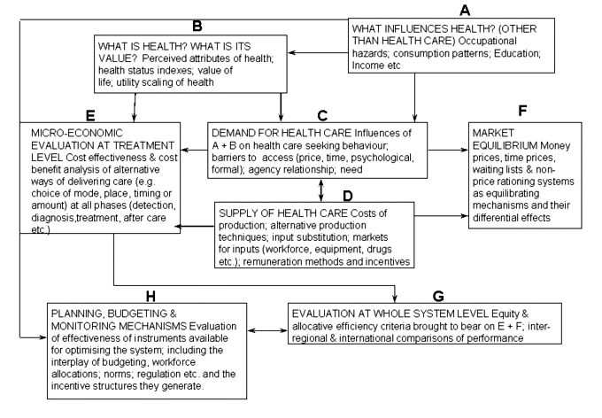
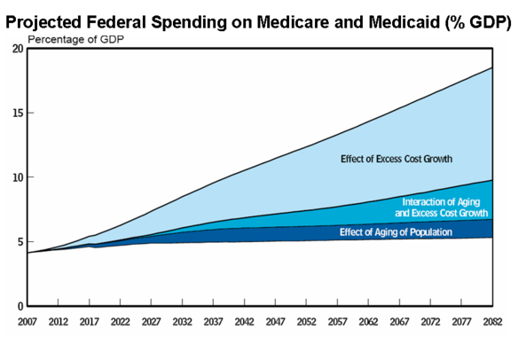
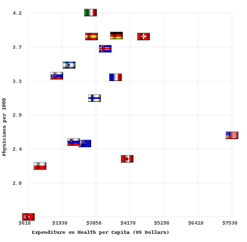
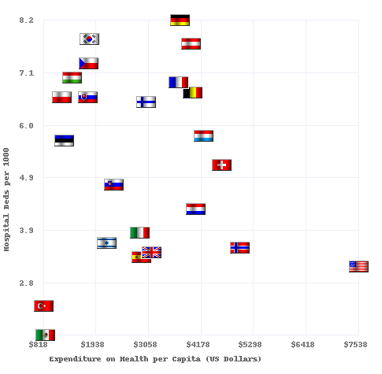
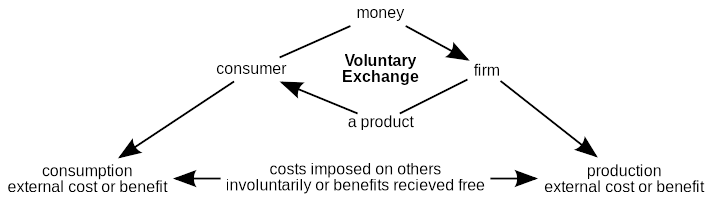
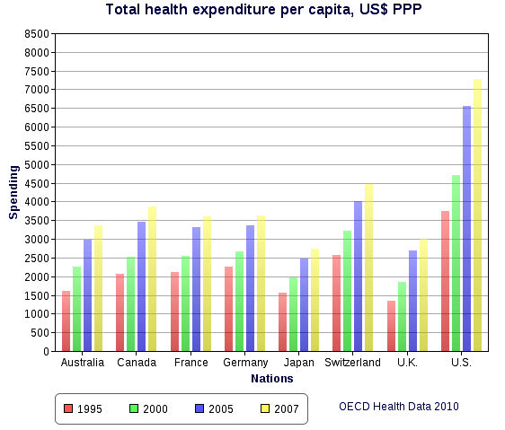

Table of Contents
35. Health Care Economics
35.1. Introducing Health Care Economics
35.1.1. Defining Health, Health Care, and Medical Care
35.1.2. Where a Dollar Spent on Health Care Goes: Introducing the Inputs to Health Care
35.1.3. Different Health Care Systems Around the World
35.1.4. Externalities in the Health Care Market
35.1.5. Current Issues in Health Care
35. Health Care Economics
35.1. Introducing Health Care Economics
35.1.1. Defining Health, Health Care, and Medical Care
Health care economics is a segment of economic study pertaining to the value, effectiveness, and efficiency in health care services.
Learning Objective
List the parties involved in the healthcare system in the United States
Key Points
- Kenneth Arrow, in 1963, differentiated health care economics from other economics due to the wide range of unique considerations involved (i.e. infinite demand, wide range of stakeholders, etc. ).
- Health care is a significant concern for patients, insurance companies, governments, businesses, health care providers, researchers, and non-profits. These parties determine the supply, demand, oversight, and externalities of the system.
- Currently, U.S. health care is largely privatized with the exception of medicaid and medicare, the former being for low income groups and the latter for retirees. This is unlike many developed nations, who have socialized support in place.
- The insurance company, the government (medicaid and medicare), or the individual (if they are not covered or if their particular procedure is not covered) is the direct client of the hospitals, pharmacies, and doctor's offices.
- Overall, this system of health care in the U.S. is quite convoluted. There are many players involved and the stakes are extremely high.
Key Term
- Health care
- The prevention, treatment, and management of illness or the preservation of mental and physical well-being through the services offered by the medical, nursing, and allied health professions.
Health care economics is a segment of economic study pertaining to the value, effectiveness, and efficiency in medical care and health care services and issues. The study of health care, from an economic perspective, requires taking a broad lens on a complex system with a wide variety of stakeholders. In 1963, Kenneth Arrow differentiated health care economics from other economics due to the wide range of unique considerations involved. Health care, due to the severity of the need/demand, wide variety of externalities, government intervention, and role of doctors as third-parties (making critical purchasing decisions for other people), cannot be considered from the same perspective as other industries.
Defining Health Care
Health care is a significant concern for patients, insurance companies, governments, businesses, health care providers, researchers, and non-profits. It is a vast economic system with many internal players and externalities. Understanding the basic factors involved, both logistically and economically, will provide useful context in defining health care and the medical care services.
outlines who is involved, and in what fashion.
{kind=link}
This flow chart does an excellent job of outlining the various stakeholders and influences in the broader health care system context.
- Health (Box B): Health metrics for health attributes from a value of life and overall utility-based perspective.
- Demand for Health Care (Box C): The overall health care demand, which is a complex array of inputs that can be summarized as health care seeking behaviors, and what factors influence them (i.e. externalities, price, time, perspectives, etc.).
- Supply of Health Care Costs (Box D):The supply of health care in most systems is quite complex, inclusive of direct inputs such as drugs, medical suppliers, and diagnostics to insurance companies (third parties) to health care professionals (doctors, nurses, etc.) to research.
- Evaluation of the Whole System (Box F): This is where the government factors in, particularly in countries with a more socialized system for health care, alongside the comparisons both internally and externally.
This process flow is what defines health care and the medical industry from an economic standpoint, and the relative influence of each of these components, and the interdependence between them, is worth studying to determine where higher degrees of efficiency and efficacy can be found.
Health Care System in the U.S.
With this in mind, it is useful to also outline the inputs and outputs of the U.S. health care system, particularly during this transitional time. At the time of this writing (2013), the Affordable Care Act (often referred to as 'Obamacare') will be coming into play shortly. While the details and implications of this are beyond the scope of this discussion, it is useful to understand what the basic construct that exists in the United States currently.
At the moment, health care is largely privatized with the exception of medicaid and medicare, the former being for low income groups and the latter for retirees. For most of us, health care insurance is generally purchased on a capital market by a policy-holder (who may be a company the beneficiary works for or the beneficiary themselves, depending upon the profession and contractual obligations of an employer). This health insurance plan offers a construct for what will be covered under an umbrella of monthly health care payments, and what is considered outside of the plan. There are many large health care insurance providers out there, offering this service to prospective beneficiaries.
Now, either the insurance company, the government (medicaid and medicare), or the individual (if they are not covered or if their particular procedure is not covered) is the direct client of the hospitals, pharmacies, and doctor's offices. These institutions are also quite complicated, and require their own insurances against liability due to the high consequences in the field. Doctors and nurses provide a service, either actively performing a recommended approach (e.g. surgery) or recommending a treatment (e.g drugs). These medical professionals are largely overseen by the government from a quality control perspective (various standardized test and degree requirements), adding an additional line of complexity to the operation.
Overall, this system of healthcare in the U.S. is quite convoluted. There are many players involved and the stakes are extremely high. Picture a demand curve for a treatment for a deadly disease, what would the price point be? Considering the consequences, healthcare services often fall outside of standard macroeconomic concepts, defying supply and demand frameworks due to the nature of the business (i.e. life and death, the well-being of people). This underlines a social issue: how can we improve healthcare economics to maximize value and minimize costs?
35.1.2. Where a Dollar Spent on Health Care Goes: Introducing the Inputs to Health Care
Health care has many inputs and a variety of incumbents, namely insurance providers, administrators, governments, and pharmaceuticals.
Learning Objective
Discuss the factors that affect the cost of and access to healthcare
Key Points
- While a percentage breakdown of who procures the largest capital gains from health care is difficult to ascertain across such a complex system, it is safe to say that quite a few players contribute to the constantly rising price.
- In short, the dollar value of health care is largely provided by beneficiaries to insurance companies (or governments), and paid out to administrative systems who employ and pay health care providers.
- One of the most discussed topics in health care is accessibility. Governments and insurers provide economics means for this in developed nations.
- One of the larger issues in accessibility is nations without the infrastructure required to support health care industries. Developing nations often do not have access to the skills or suppliers required.
Key Terms
- Medicaid
- U.S. government system for providing medical assistance to persons unable to afford medical treatments.
- Medicare
- The system of government subsidies for health care for the elderly and disabled.
- Beneficiary
- One who benefits or receives an advantage.
Healthcare has many inputs and a wide variety of interested parties profiteering. Understanding what drives the need for health care (and what prevents it), what is included in the cost, and the overall accessibility of this essential service is critical to understanding economics issues in healthcare. A dollar spent on health care can find it's way to insurance providers, medical service providers, pharmaceutical companies, governments, administrative bodies (managing these businesses), and laboratories. Understanding what individuals pay for and why, alongside what is available, is important data for navigating this market.
Where the Money Goes
While a percentage breakdown of who procures the largest capital gains from health care is difficult to ascertain across such a complex system, it is safe to say that quite a few players contribute to the constantly rising price of even simple procedures and doctor's visits. A breakdown of the critical players illuminates this further:
- Health Care Providers: On the surface, this is who a beneficiary feels like they are paying. This is their doctors, nurses, psychologists, dietitians, technologists, chiropractors, surgeons, and a wide range of other hands on and customer facing roles. These individuals are further differentiated by the fact that they often act as references as opposed to direct suppliers, making them both a direct to consumer provider and a third party provider.
- Pharmaceutical Companies: Drugs are playing an increasingly large role in health care, and likely will continue to do so in the future. The constant development of new drugs, alongside the distribution of established medications, is an enormous part of the market.
- Insurance Providers: There is a divider between most medical service consumers and their providers, and this is the insurance company. For those who are covered by their full-time jobs (or dependents of these individuals), this is largely a matter of who their business purchases from. For others not covered, insurance issues are a complex and highly expensive issue, and getting coverage is quite difficult (this is being addressed in the U.S. by new legislation, and is not an issue in most other developed nations). The insurance companies command a huge profit and represent a substantial part of the medical price tag.
- Government: The role of government in health care is fiercely debated in the United States, but in most of the developed world the government is essentially the provider of health care plans (using social services models to consolidate tax revenues to be allocated for this service). In the U.S., this is only done for medicaid and medicare. The government also takes tax revenues from involved parties in this industry, driving prices up further.
- Administration: This is the hospital itself, or the doctors office, where the management team attempts to run a largely profitable business in the medical industry. Administration pays the health care providers and the government, taking income from direct consumers, the government, and the insurance companies to cover the cost of business (and often turn substantial profits).
With these group of incumbents in mind, it becomes quite clear why the costs are rising exponentially and are so unsustainable. The constant struggle between these large and powerful players coupled with an essentially infinite demand has left the consumer as an extremely weak player in the market. Indeed, with this in mind, the graph displays the trajectory of health care spending due to excess costs in the long term .
{kind=link}
This graph illustrates the danger of continuing down path of using the excessively high cost-structure U.S. health care incumbents have dictated in the context of spending as a % of GDP.
Accessibility
One of the most discussed topics in health care is accessibility. Due to the fact that health care represents the ability for an individual to maintain a healthy and happy life, it seems intuitive that accessibility must as unlimited as possible. Of course, in a capitalistic system, this will not be the case. Economics dictates that price points will be determined based on supply and demand, and the demand in this industry is often essentially infinite. As a result, accessibility and profitability do not always align from an economic perspective. The U.S. employs medicaid and medicare to provide for low-income and elderly citizens that would otherwise be excluded from the market, while other countries have healthcare systems with more government intervention to address market failure.
One of the larger issues in accessibility is nations without the infrastructure required to support health care industries. Developing nations often do not have access to the skills or suppliers required to run modern hospitals and doctors offices, nor the ability to act preventatively (i.e. eating healthy, getting exercise, check ups, etc.). This creates enormous inefficiency in the system and reduces the economic viability of operating in these countries for insurance providers. Addressing this concern is one of the central issues for the United Nations (UN) and other nongovernmental organizations.
35.1.3. Different Health Care Systems Around the World
Health care systems differ from nation to nation depending upon the level of economic development and the political system in place.
Learning Objective
Identify different types of healthcare systems
Key Points
- A health system consists of all organizations, people and actions whose primary intent is to promote, restore or maintain health. This includes efforts to influence determinants of health as well as more direct health-improving activities.
- The World Health Organization has been actively measuring a variety of performance indicators to determine an overall ranking system for health care on a global scale.
- The countries which perform the highest on these metrics are primarily located in Europe, where social systems are well designed at a governmental level to ensure prices remain accessible and care remain available.
- The U.S. has consistently ranked poorly and continues to perform substantially below European counterparts deemed developed at similar economic levels.
- Developing nations struggle to compete and compare apples to apples to developed nations, primarily due to the required infrastructure and capital requirements.
Key Terms
- Universal healthcare
- A system where every citizen is guaranteed access to a certain basic level of health services.
- World Health Organization
- The World Health Organization (WHO) is a specialized agency of the United Nations (UN) that is concerned with international public health.
- Determinants
- A determining factor; an element that determines the nature of something
Health care differs from nation to nation, sometimes substantially depending upon the level of economic development and the political system in place. Health care systems, on the global scale, is best defined via the World Health Organization's definition: "A health system consists of all organizations, people and actions whose primary intent is to promote, restore or maintain health. This includes efforts to influence determinants of health as well as more direct health-improving activities. A health system is therefore more than the pyramid of publicly owned facilities that deliver personal health services. " This definition is important when observing international health care systems, as it captures both developed and developing nations within this context.
Comparisons: Developed Nations
The World Health Organization has been actively measuring a variety of performance indicators to determine an overall ranking system for health care on a global scale. While this has seen some objections, primarily due to the selection of attributes which weigh into this ranking, it is designed to measure critical success factors which are easily comparably across borders (apples to apples). These measured attributes include health of the population, fair financial contributions, responsiveness of the system, preventable deaths, affordability and a range of other considerations.
The countries which perform the highest on these metrics are primarily located in Europe (generally northern Europe, see ), where social systems are well designed at a governmental level to ensure prices remain accessible and care remain available. Interestingly, the U.S. has consistently ranked poorly and continues to perform substantially below European counterparts deemed developed at similar economic levels. Two good examples are provided in the media relative to the overall capital costs and the subsequent returns on these costs, on being costs to hospital beds per capita and the other costs to physicians per capita . By these measures, European nations capture more value and efficiency within their systems. The most notable difference between these systems is that the US is that, of these countries, the US is the only country without universal healthcare.
{kind=link}
Similar to the graph representing costs vs. beds, this chart illustrates the number of physicians available (relative to the population) in the context of capital expenditures. Once again the United States is a clear outlier, where the number of physicians is low and the cost quite high.
{kind=link}
This graph demonstrates the apparent correlation between beds (per 1000 people) and the costs involved in healthcare overall. This demonstrates that, on a per capita basis, the U.S. is spending a great deal without capturing much in return relative to available space for patients.

Healthcare spending per capita is on the left y-axis and life expectancy is on the right. Country differences are apparent, especially when comparing the US to others.
Healthcare spending per capita is on the left y-axis and life expectancy is on the right. Country differences are apparent, especially when comparing the US to others.
Let us explore further through an example of health care in German (though not all European countries are the same). Germany has consistently demonstrated reductions in cost of health care per capita relative to GDP growth. German health care is regulated by the Federal Joint Commission, a public health organization which leverages governmental health reform bills to generate new regulations. This system also includes a total of 85% of the population on the government offered standardized health care plan, which covers a variety of health care needs across the board. The remaining 15% of the population has opted for private health insurance options, which provide unique niche benefits for specific groups. This system has been highly effective and affordable in providing health care to German citizens.
Developing Nations
With fewer resources, developing nations struggle to compete provide the same access to health care as do developed nations.
China is an interesting case study. China has a great deal of variance in quality and accessibility, with hospital wait times for the poor (depending on severity) taking many hours (sometimes days) compared to the rich, who are admitted immediately. Transitioning towards a system that provides care to the rich and the poor alike is the primary challenge in these developing regions.
35.1.4. Externalities in the Health Care Market
Health care can impact people beyond the person receiving and the person providing the care, causing positive and negative externalities.
Learning Objective
Describe externalities in the healthcare market
Key Points
- An externality is any impact, be it positive or negative, on individuals or groups not involved in a given economic transaction.
- Negative externalities include tax costs, infectious disease, anti-biotic resistance and environmental degradation. The negative components impact others despite their participation in the system.
- Positive externalities include increases in wealth due to increased health, vaccinations to limit disease exposures and increases in technology and knowledge.
- Positive externalities include increases in wealth due to increased health, vaccinations to limit disease exposures and increases in technology and knowledge.
Key Terms
- externality
- An impact, positive or negative, on any party not involved in a given economic transaction or act.
- Vaccinations
- Inoculation with a vaccine in order to protect a particular disease or strain of disease
Defining Externalities
An externality is any impact, be it positive or negative, on individuals or groups not involved in a given economic transaction . That is to say, an externality is something that affects other people outside of the particular parties involved in an exchange.
{kind=link}
The basic premise of an externality is captured in this diagram, where external factors affect the internal economic system for a product or service.
A classic example of externalities is the automobile. Cars consistently produce air pollution whenever they are driven, slowly eroding the health of our ecosystem. This cost is shouldered not only by the driver of the vehicle, but also by every living thing on the planet. This is an example of parties not involved in the transaction (selling or buying the vehicle) being impacted, in this case negatively.
Health Care Externalities
In health care, the critical externality in most systems is the care provided to others. You benefit from others being healthy because it reduces the likelihood of you catching their illness (assuming it's contagious). You benefit from a positive externality of others receiving health care.
Your health care costs are also affected by others choosing to purchase health care. The healthy pay more to the insurance company than they receive in treatment, while the opposite is true for the sick. Insurance fundamentally operates by taking the money from healthy people to pay for the procedures required by sick people.
Taxpayers should also be concerned with the state of the healthcare system not only because they pay for Medicare and Medicaid, but also because healthcare is a huge part of the US economy. In 2011, the US spent 17.2% of GDP on healthcare, more than any other country. Reducing the cost of health care can clearly increase the amount that the US can consume or invest.
Other negative externalities include:
- Infectious Disease: One of the largest reasons why health care is so critical is the fact that disease are infectious. Untreated disease will result higher population vulnerability to that disease due to increased exposure.
- Environmental Degradation:Health care produces a great deal of chemical waste, requires a great deal of emissions (ambulances, etc.) and alters the natural ecological environment of bacteria.
- Antibiotic Resistance: An interesting byproduct of the newer solutions to medical dilemmas is the slowly growing resistance of antibiotics in bacteria. Due to the way in which the health care industry has been operating, bacteria are dramatically altering to resist our solutions.
Positive externalities include:
- Health Affects Wealth: Healthy workers are absent from work less and are more productive workers. A health care market that effectively helps workers can lead to positive economic gains.
- Technology and Information: The study of health care, and the research involved in generating new solutions, has dramatically increased the knowledge and technological capacity of society in general. This has affected other industries, as research and development in health care affects the technological efficacy in other markets.
- Vaccinations: An interesting new development in health care is the advent of vaccines. Vaccination results in herd immunity, or essentially the fact that many individuals will become immune and thus reduce the likelihood that everyone in the population will contract certain diseases.
35.1.5. Current Issues in Health Care
Current issues in the U.S. health care system largely revolve around the significant policy changes resulting from the Affordable Care Act.
Learning Objective
Explain the main parts of the Affordable Care Act and the current American healthcare system
Key Points
- U.S. citizens pay substantially more per capita for health care than do residents of other countries, and many people lack access to affordable health care.
- Patients have procedures performed by doctors, by the actual exchange of money occurs between the patient's insurance provider and the doctor's employer.
- The Affordable Care Act addresses issues like pre-existing conditions, anti-trust, unfair rates based on gender, universal standards and a range of other considerations.
- Many individuals believe that this new legislation will increase costs for small businesses, and will motivate 'freeloaders', or individuals who take government handouts.
Key Terms
- Affordable Care Act
- The ACA was enacted with the goals of increasing the quality and affordability of health insurance.
- Pre-existing Conditions
- A pre-existing condition is a risk with extant causes that is not readily compensated by standard, affordable insurance premiums.
Current issues in the U.S. health care system largely revolve around the significant policy changes imposed by the Affordable Care Act (ACA, or Obamacare), which attempts to provide health insurance coverage for all citizens. This legislation was designed to respond to many flaws in the current U.S. system of healthcare. It is also important to understand the criticisms of this change, as many voters in the U.S. disagree with proposed changes to the system.
{kind=link}
This map outlines the voting distribution in 2009 when the Affordable Health Care Act was brought to the floor.
U.S. Health Care Currently
The U.S., despite having some of the greatest technological advances and medical professionals, has consistently struggled to provide affordable, effective health care to everyone. The costs alone, on a per capita basis, underline the way in which the U.S. system has struggled to meet international standards in providing affordable care. illustrates the costs incurred by each individual in the system based on a country to country comparison. As it illustrates, consumers in the U.S. are faced with much higher (and growing) costs than international counterparts.
{kind=link}
This chart illustrates the costs incurred by each individual in the system based on a country to country comparison. As is demonstrated, consumers in the U.S. are faced with much higher costs (and consistently growing higher) than international counterparts.
Most Americans with private health insurance have it provided by their employers. There are also social welfare programs such as Medicaid and Medicare. The insurers negotiate rates with hospitals for different procedures. Patients then go into the hospital and get procedures recommended by doctors. The doctors are then paid by hospitals. This is a classic case of moral hazard: the two parties deciding for the transaction to occur- patients and doctors- are not the same two exchanging money.
Healthcare has a demand curve that fluctuates wildly based upon the extent of the issue - consumers who are facing serious health problems will likely demand healthcare at almost any price, allowing medical providers to take advantage of the inelastic demand. Further issues include the fact that doctors represent a third party (recommending drugs and procedures) and that insurance companies have the power to deny coverage to individuals who need it most.
The Affordable Health Care Act
In December of 2009, the Senate passing a bill called Patient Protection and Affordable Care Act. The Affordable Care Act is a complex piece of legislation, but a number of bullets from the bill are highly useful to understand:
- Pre-existing Conditions: Individuals with pre-existing conditions are much more likely to be expensive clients, and thus are not profitable to insure. This results in insurers refusing to insure these patients. The Affordable Care Act addresses this through legislation, saying providers cannot refuse coverage.
- Changing Insurance Rates: As a complement to the analysis above, insurance agencies also cannot alter rates based on pre-existing conditions or gender. This levels the playing field for the consumer, who historically had limited buyer power.
- Antitrust: Previously, insurance companies were immune to antitrust laws. This means they could generate monopolies geographically and exploit consumers. This immunity has been repealed.
- Standards: Obamacare also closes loopholes regarding to quality standards, ensuring that insurance providers do not reduce what is provided to clients in an effort to cut costs.
- Healthcare.gov: This is a way to enable consumers in finding health care insurers in a way that promotes capitalistic competition between providers. Previously, discussing pricing and plans with insurers was highly complex for many individuals (designed for businesses, not individual consumers).
- Medicaid and Medicare: Overall, medicare has been reduced while medicaid has been expanded. Medicare spending has been increasing dramatically. This has been cut by \$400 billion, which is a source of discontent for many individuals. Medicaid has been expanded to 133% of the poverty level, covering more people.
Criticisms
The ACA will only work if both healthy and sick people alike buy insurance: if the healthy choose to pay the fine for not having insurance and only the sick buy insurance, then costs will increase. There is also a political critique of the ACA. Some feel that the government should not mandate that private citizens purchase insurance in the first place. They feel that the government is overstepping its bounds.
Many individuals also believe that this new legislation will increase costs for small businesses that are now required to buy insurance for their employees, and will motivate 'freeloaders', or individuals who take government handouts. Overall, while the goal is to enable more people to health care more affordably, many people believe this new approach will do not accomplish that.